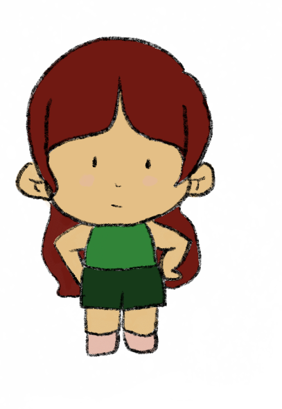
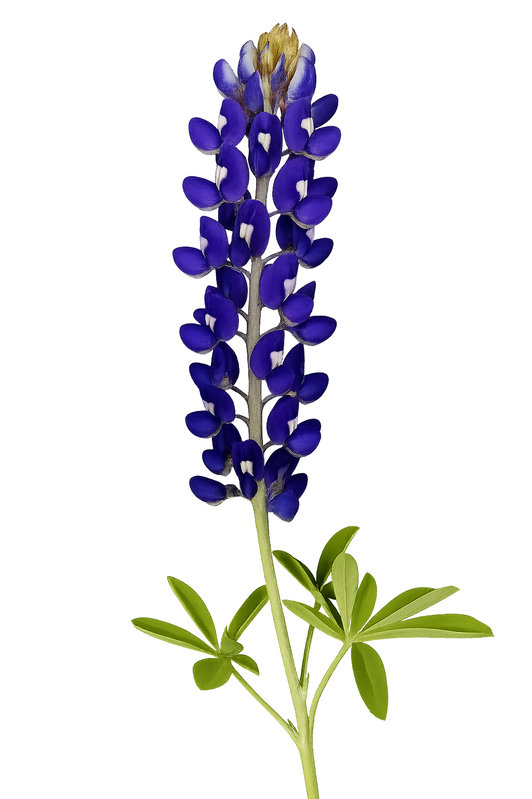

Scene One
Press Enter to start
"I've never seen something so beautiful..."
It was just a sea of blue.
Press Enter to continue
Press E to pick flower
Move with Arrow Keys or WASD
 
A few days later...
Letters revealed: E L